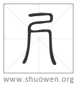

加入收藏
清代 段玉裁《說文解字注》
- 十寸也。
寸、十分也。禾部曰。十髮爲程。一程爲分。十分爲寸。又曰。律數十二。十二禾秒而當一分。十分而寸。漢志曰。九十分黃鍾之長。一爲一分。十分爲寸。十寸爲尺。十尺爲丈。十丈爲引。而五度審矣。
- 人手卻十分動脈爲寸口。
寸部下亦曰。人手卻一寸。動𧖴謂之寸口。鄭注周禮曰。脈之大𠋫要在陽明寸口。疏云。陽明在大拇𢫾本骨之高處與弟二𢫾閒。寸口者、大拇𢫾本高骨後一寸是也。按大拇𢫾本高骨後一寸、許所謂人手卻十分也。卻者、𢇛也。𢇛者、拓也。人手竟又開拓十分得動脈之處、是曰寸口。凡寸之度取象於此。
- 十寸爲尺。
十其長是爲尺。
- 尺、
逗。
- 所㠯𢫾尺規榘事也。
𢫾尺當作𢫾𢇛。聲之誤也。𢫾𢇛猶標目也。用規榘之事。非尺不足以爲程度。尺居中。下可晐寸分。上可包丈引也。漢志曰。寸者、忖也。尺者、蒦也。尺𢇛蒦三字同韵。
- 从尸。
主也。
- 从乙。
會意。昌石切。古音𡉈五部。古書亦借赤爲之。毛晃曰。宋時案牘如此。
- 乙、
逗。
- 所識也。
漢武帝讀東方朔上書未盡。輒乙其處。題識之意也。以榘尺記識所度、故從乙。
- 周制寸尺咫尋常仞諸度量。皆㠯人之體爲法。
寸法人寸口。尺起於寸。咫法中婦人手。尋、八尺也。法人㒳臂之長。常倍尋。或曰。常當作丈。周制、八寸爲尺。十尺爲丈。人長八尺、故曰丈夫。人部曰。仞、伸臂一尋也。是仞尋無二。而此尋仞並舉。疑許主七尺曰仞之說。人部之解出後人改竄。非許原文。說詳人部。